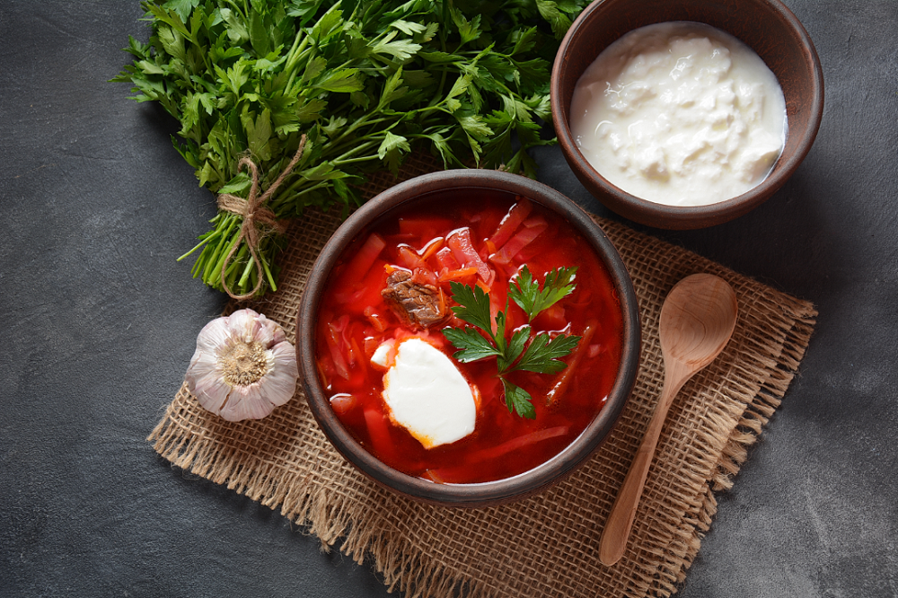

Рецепт борща

Ингредиенты:
- 300 г свеклы
- 200 г капусты
- 200 г картофеля
- 1 морковь
- 1 луковица
- 500 г мяса (говядина или свинина)
- 2-3 ст. ложки растительного масла
- Соль, перец по вкусу
- Зелень по вкусу
- 2-3 ст. ложки уксуса или лимонного сока (по желанию)
Приготовление:
- Сварите мясо в 2-3 л воды до готовности, затем уберите его из бульона.
- Нарежьте овощи: свеклу и морковь натрите на терке, картофель и лук - кубиками, капусту - мелко нашинкуйте.
- Обжарьте свеклу и морковь на растительном масле, добавьте немного уксуса.
- Положите в бульон картофель и лук, варите около 10 минут.
- Добавьте обжаренные свеклу и морковь, капусту. Варите до готовности овощей.
- Добавьте соль, перец и нарезанное мясо, дайте борщу настояться перед подачей.
- Подавайте с зеленью и сметаной по вкусу.